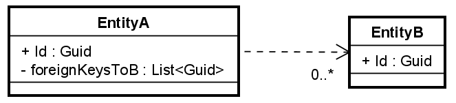
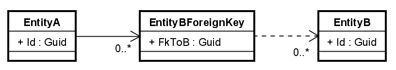
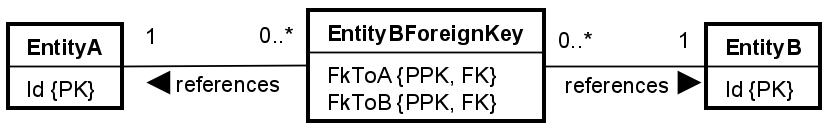

- 1 Introduction
- 2 Adding EFC Packages
- 3 Init DbContext
- 4 Design Time Factory Class
- 5 Test strategies
- 6 Test helper methods
- 7 Primary keys and constructors
- 8 Private Constructor
- 9 Configuring Guid Primary Key
- 10 Configuring Strongly Typed PK
- 11 Primitive Field Variables
- 12 Value Objects
- 13 Non-nullable Single-Valued ValueObject
- 14 Nullable Single-Valued ValueObject
- 15 Non-nullable multi-valued ValueObject
- 16 Nullable multi-valued ValueObject
- 17 Non-Nullable Nested ValueObjects
- 18 Nullable Nested ValueObjects
- 19 List of Value Objects
- 20 Guid as Foreign Key
- 21 Strongly Typed Foreign Key
- 22 List of Guid Foreign Keys
- 23 List of Strongly Typed Fks
- 24 Enums
- 25 Enumeration class
- 26 Single nested Entity
- 27 List of Entities
- 28 List of primitives
DDD With EFC
This guide aims to explain how to configure Entity Framework core to work with your DDD inspired Domain Model.
Such a domain model looks vastly different from what EFC conventionally uses,
which are just simple classes (data containers),
with public properties.
Your domain model uses value objects, entities, aggregates, strongly typed ids, and much more.
The patterns used to construct this domain model differs from the conventional EFC approach,
and therefore we need to do a lot of manual configuration so that EFC can persist your data.
For the most cases, we can do this configuration without interfering with the DM.
There will, however, be some cases,
where you may have to rework your domain model a little bit. Mainly internal parts, so this should hopefully be acceptable.
This is a trade-off we must accept, if we wish to use EFC. It does seem like they continuously improve support, though. Lucky us.
The next couple of slides does the initial setup in a step-by-step.
And then follows slides, which deal with the various specific cases.
So, go through the first slides on setting up. Then find the slides relevant to your case.
Each specific configuration case is explained with an isolated, generic example, along with one or more unit tests proving correctness. Hopefully you can convert this to your own specific needs.
Fluent API
EFC uses 3 kinds of configuration:
- By convention: Here you create "property bags", i.e. a class with public properties. You follow naming conventions. EFC will then discover most things.
- By annotations: Here you put attributes on your properties, e.g. [Key] and [Required].
- With the Fluent API you write code in your DbContext class, to configure the entities.
We will go with the last option. Why? Our domain model class are not property bags. They are carefully designed.
Option two is "invasive", meaning we need to put all kinds of EFC specific attributes into the domain model. But remember,
we aim to keep technologies out of the domain.
The third approach means we can configure everything from the "outside". It is also the most powerful, and it takes precedence over the other two approaches.
It is called the "Fluent API", because you will often chain multiple methods together, using the Fluent technique.
For example:
modelBuilder.Entity<Guest>().Property(guest => guest.Username).IsRequired();
The modelBuilder is the class used to get started with any configuration.
We then want to configure something for the Guest entity.
And we grab the property on the Guest called Username.
Finally we say that this property must have a value, it is required.
So, this chain of method calls is "fluent".
There are different "builders" in EFC, we will use different ones, for different purposes.
If we wish to configure an entity, we use a EntityTypeBuilder.
If we wish to configure a property, we use a PropertyBuilder.
And so on. This is somewhat "automatic". You will see.
Often configuration code (or generally fluent code, like LINQ) will be formatted so that each dot "." starts on a new line, like this:
modelBuilder.Entity<Guest>()
.Property(guest => guest.Username)
.IsRequired();
This seems to be a common approach, with the aim to increase readability.
I will also use this approach, mainly because it is easier to explain what each line does. E.g. "line 2 accesses the Username property on Guest".
How to read
A lot of the configurations are very similar, or we are doing part of the same thing over and over.
This means, it is better described the first time, it is encountered.
I realize this is unfortunate, if you use this guide as a reference, and you are looking for a specific case. Then that case may not actually contain all the details, you hoped for.
Eventually I may rework this guide, so that each case is self-contained. But for now, I will just refer to the first time, and then be brief the next times.
Visualizer tool
I have created a web page, which can visualize the sql script generated by EFC. You can use this tool to get a Global Relations Diagram of what your database will look like.
First, you must generate the script. It's done with this command in the terminal. You must be in the project folder, where the DbContext is located.
dotnet ef dbcontext script
If you just wish to verify the script, the above command is enough.
If you wish to use the tool, I suggest outputting the script to a file, like this:
dotnet ef dbcontext script > output.txt
Then you can copy the content of the file, and paste it into the tool.
This is because the terminal will make irregular line-breaks, which the tool cannot handle.
Here's a link to the tool: EFC Visualizer
Table of content
Slides:
6. Constructor
7. Test helper methods
8. Guid primary key
9. Strongly typed primary key
10. Primitive field variables
10. Value object overview
11. Non-nullable single-valued value object
12. Nullable single-valued value object
13. Non-nullable multi-valued value object
14. Nullable multi-valued value object
15. Non-nullable nested value objects
16. Nullable nested value objects
17. List of Value objects
18. Single foreign key with Guid
19. Single foreign key with strongly typed id
20. List of Guid foreign keys (wrapper med conversion)
21. List of strongly typed ids (wrapper og conversion)
22. Enums
23. Enumeration classes
24. Single nested entity
24. List of entities.
Adding EFC Packages
In order to use EFC, we must add it to the relevant project.
The first step is therefore to add the following NuGet packages to the project, where you wish to use EFC, i.e. the project responsible for data persistence.
At the time of writing, we are using EFC8. You should use the version, which matches your .NET version.
And you should use a stable version of EFC, i.e. no "beta"-version. These are suffixed with "RC", I think.
Add the following three packages:
- Microsoft.EntityFrameworkCore
- Microsoft.EntityFrameworkCore.Design
- Microsoft.EntityFrameworkCore.Sqlite
We are going to use SQLite in the course, that is just easier.
You may go for another relational database, if you like, but there is really no benefit,
as we will not be doing much more than just testing out stuff.
Setup DbContext
Now, we create the DbContext. The entry point whenever we wish to interact with the database.
Start out something like this:
public class SqliteWriteDbContext(DbContextOptions options) : DbContext(options)
{
public DbSet<VeaEvent> Events => Set<VeaEvent>();
public DbSet<Guest> Guests => Set<Guest>();
protected override void OnModelCreating(ModelBuilder modelBuilder)
{
}
}
Explanation for lines:
Line 1
- I have called the class SqliteWriteDbContext. You will later have a similar "Read" context.
- We get
DbContextOptionsthrough the Primary Constructor - The
optionsargument is passed to the base class. This argument contains information about which database to use.
It must be injected from the outside because of testing reasons. You will see later.
Lines 3-4
- I define a DbSet per aggregate root entity. There should be no need to define sets for entities, other than the root.
- Obviously, if you do a different project case, or have different aggregate root entities, adjust the code accordingly.
- The
=>part is just the general recommendation, it means we retrieve the specific generic Set, which contains a certain entity.
Lines 6-9: OnModelCreating(): This is left empty for now, but here we will add all configuration code.
This should be enough for now.
Design Time Context Factory
Design time
refers to the time where e.g. a migration is created.
Here, an instance of our DbContext will be created.
We do have a problem though, because our DbContext requires an argument for its constructor.
Usually this is provided in the Program.cs class, upon start up, so generally not a problem.
But when just generating the database or verifying a configuration,
or testing whether a DbContext can actually be created, or verifying the output sql looks right,
we need some way to provide this argument.
We do this with a DesignTimeContextFactory.
At the same location as your DbContext, create the following class:
public class DesignTimeContextFactory : IDesignTimeDbContextFactory<SqliteWriteDbContext>
{
public SqliteWriteDbContext CreateDbContext(string[] args)
{
var optionsBuilder = new DbContextOptionsBuilder<SqliteWriteDbContext>();
optionsBuilder.UseSqlite(@"Data Source = VEADatabaseProduction.db");
return new SqliteWriteDbContext(optionsBuilder.Options);
}
}
Modify code as needed, e.g. if you have named your DbContext differently, you must fix the generic type argument in the inheritance in line 1.
And in the first line inside the method.
You may also change the data source variable, if you want to call your database something else. Or if you use a different database provider, e.g. PostgreSQL.
When trying to e.g. create a migration, or verifying a configuration, EFC will look for this class, and use it to instantiate a DbContext with the correct parameters.
Test
To test this, open the terminal, navigate into the project, and type:
dotnet ef dbcontext script
Like this:
We will use this command over and over, to verify our configurations.
The point of that command is to see what SQL script is generated, based on your current DbContext, if we were to create a migration, e.g. build the database.
It will fail. That's fine, this is what we currently expect.
It should fail with an error message about one of your entities needing a primary key:
"... The exception 'The entity type 'VeaEvent' requires a primary key to be defined ..."
If you get this message, all is good for now.
Wrong failure
If you get a message about not being able to instantiate/activate the DbContext, you have failed incorrectly:
"Unable to resolve service for type 'Microsoft.EntityFrameworkCore.DbContextOptions' while attempting to activate 'SqliteDataWrite.SqliteWriteDbContext'"
This is because EFC cannot find your IDesignTimeDbContextFactory.
Testing Strategies
I will for each configuration case provide one or two test cases, to show how to test the configuration.
This is generally not as thorough as one might wish. You will need to define success and failure cases.
- How do you prove it works as expected?
- What happens if some value is missing? What should happen? Is the database constraints correct?
- What happens if a list is empty?
- What happens if one entity is deleted? Are associated entities deleted as well? Should they be?
- Is the ON DELETE behaviour "set null" or "cascade" or "restrict" or "no action"? And does this actually work?
Test Helper Methods
Each configuration case is demonstrated with an automated integration test.
Each test needs to do similar things:
- Instantiate a DbContext
- Create a clean database
- Setup one or more entities with whatever values, matching the specific configuration we are testing
- Save entities to the database
- Clear the ChangeTracker of DbContext. This is keeping track of every entity The DbContext has handled, like a cache. We must clear it, so that data is fetched from the database, not the cache.
- Retrieve the same entity
- Verify the relevant data is retrieved too, as expected.
This must be done for every test. I therefore have two helper methods, to shrink the amount of copy/pasting needed.
These two methods will be used in each of my tests going forward.
Create DbContext and Setup Database
The first helper method creates a DbContext, and sets up a fresh database:
private static MyDbContext SetupContext()
{
DbContextOptionsBuilder<MyDbContext> optionsBuilder = new();
optionsBuilder.UseSqlite(@"Data Source = Test.db");
MyDbContext context = new(optionsBuilder.Options);
context.Database.EnsureDeleted();
context.Database.EnsureCreated();
return context;
}
Line 1: It is static for performance reasons, not strictly necessary.
Line 3: Create options builder, here we can set various db configurations. In our case the specific test database.
In a real system, you often have different databases, like production, Q/A testing, local testing, etc. We need a database, we can reset for every test.
Line 4: We define the test database.
Line 5: Create new instance of DbContext.
Line 6: Delete any existing database.
Line 7: Create clean database.
This method is called at the beginning of each test, like this:
await using MyDbContext ctx = SetupContext();
Then we have a fresh DbContext, with a clean database.
Save and Clear
The next helper method covers saving an entity, and clearing the ChangeTracker (the cache).
private static async Task SaveAndClearAsync<T>(T entity, MyDbContext context)
where T : class
{
await context.Set<T>().AddAsync(entity);
await context.SaveChangesAsync();
context.ChangeTracker.Clear();
}
Line 1:
- Again, static, performance, not really necessary, but Rider gives warning.
- Method is generic
<T>, so that it can save any type of entity. That's the first argument,T entity.
Line 2: The last part is a constraint on the generic type argument T,
saying the argument must be a class.
Not a struct or record struct.
We need this constraint, because this constraint is also on the Set<T>() method further down.
Line 4: Access the DbSet containing whatever type of entity entity is.
Line 5: Save everything to database.
Line 6: Clear the ChangeTracker, i.e. cache.
Define Primary Keys and Constructors
As mentioned on a previous slide, you hopefully get an error about an entity missing a primary key.
All entities must have a primary key defined. And all entities must have a constructor, which EFC can use.
Initially you will just set this up on your aggregates, until EFC does not complain.
Then you can start configuration, and then as you tell EFC about your other entities, it will again complain about primary keys and constructors.
So, this is the next step.
You will have to work your way step by step through the entities, until you get a script printed in the console.
Then as you move through configurations, you may get back to this error over and over, for each entity.
Generally, I think EFC is decently good at outputting informative error messages. Get used to reading these.
First, a bit of structure.
Preparing for configuration
We start with the first entity it is complaining about, in my case the VeaEvent, probably because it's the top DbSet defined.
We configure everything from inside the OnModelCreating() method.
We are going to have a lot of configuration, so we start out with an initial structure.
You have (at least) two approaches:
- Configuration method per entity, it's simpler, we go with this, it's simpler for the guide, but the below approach is better. You should do that.
- Auto-discoverable configuration class per entity. A bit more complex, generally better. You must create an EntityConfiguration class, see here. You should go with this.
Create an EntityConfiguration class for your first entity.
I will simplify and use the other approach, and expand my code in the DbContext with a new method for configuring this first entity:
protected override void OnModelCreating(ModelBuilder modelBuilder)
{
ConfigureVeaEvent(modelBuilder.Entity<VeaEvent>());
}
private static void ConfigureVeaEvent(EntityTypeBuilder<VeaEvent> entityBuilder)
{
throw new NotImplementedException();
}
Private Constructor
Initially EFC will complain about a missing primary key, and it will then complain about a missing constructor.
But the latter is easier to fix, so we start there.
Every entity, which EFC must manage, must have a constructor it can use, when materializing entities from the database back to C#.
Such a constructor must either match all relevant properties, which generally won't do for us, because DDD DM, or, it must be a no-argument constructor:
private MyEntity(){}
Like this. This is what we will do, whenever EFC complains.
EFC uses a lot of reflection, so it is not a problem, that it is private. Now the object can be instantiated, and relevant properties are set through reflection.
We must add a private constructor to almost every EFC-entity, i.e. every kind of class EFC will manage, often including value objects. Though, you can hold off until EFC actually complains.
EFC deals only with "entity", everything is an entity. DDD is more granular, with aggregate, entity, value object.
I hope I can keep this straight, and not confusing.
The point is, when EFC complains about a missing constructor, you will add a boring, private, no-args constructor.
We find this case of EFC-needs seeping into our sacred DM acceptable, as we do not change the public API of the entity.
We are not using anything EFC specific, like attributes [Required]. We are not changing behaviour, or anything of relevance.
It's just a tiny detail, we must remember, or be reminded by EFC.
If we go away from EFC, we don't actually have to rework the DM again.
So, go ahead and add a private constructor to the first entity.
Configuring Guid Primary Key
This case covers the usage of Guids as primary key for an entity.
EFC uses convention to discover primary keys, so if you follow these, it's easy.
But we don't, and shouldn't, when doing a DDD domain model.
You are either using a Guid as primary key, or you have a strong type, e.g. EventId, or GuestId.
To be DDD compliant, I recommend the latter approach.
First, we deal with the Guid. Next slide is the strongly typed Id.
The Code
EFC can out of the box handle Guid types, they are generally just converted to text in the database.
You probably have a public property for the Guid, but with either no setter, or at least it is private.
Like this:
public Guid Id { get; }
You should not have a private set; included, as the Id should never be changed after the entity has been instantiated.
By leaving out a setter, the Id can only be set upon construction, i.e. from the constructor. Or through reflection.
This here is the generic looking entity, we will configure. It is minimal, stripped bare. You may have a factory method, that's irrelevant.
public class EntityL
{
public Guid Id { get; }
public EntityL(Guid id)
{
Id = id;
}
...
}
We have the Guid Id property, to be used as primary key.
There is a constructor to set it. You may have a factory method, either works.
EFC cannot automatically discover this property, because there is no setter. If there was a private setter, it would work.
But we don't need that, and won't do that. We will aim to minimize the effect EFC has on our domain model.
Therefore, we have to explicitly tell EFC, that we have a property called Id, and it should be used as primary key.
Here is the configuration method for EntityL (just a generic name, I have Entities A to L, at the time of writing this):
// ... other sets
public DbSet<EntityL> EntityLs => Set<EntityL>();
// ... other methods
protected override void OnModelCreating(ModelBuilder mBuilder)
{
ConfigureEntityL(mBuilder.Entity<EntityL>());
}
private void ConfigureEntityL(EntityTypeBuilder<EntityL> entityBuilder)
{
entityBuilder.HasKey(entity => entity.Id);
}
We have the DbSet defined.
The OnModelCreating calls our configure method with an argument mBuilder.Entity<EntityL>().
This argument gives us an EntityTypeBuilder, which is a class used to configure a specific entity.
In our configure method, we just call HasKey, with a lambda expression pointing to the specific Id property.
This means, we are creating a configuration for the entity of type EntityL, saying it has a primary key,
and that pk is the Id property on the class.
Guid Pk Test
The following test shows that we can:
- Create an entity with a Guid value
- Save the entity
- Retrieve it again
[Fact]
public async Task GuidAsPk()
{
await using MyDbContext ctx = SetupContext();
Guid id = Guid.NewGuid();
EntityL entity = new(id);
await SaveAndClearAsync(entity, ctx);
EntityL? retrieved = ctx.EntityLs.SingleOrDefault(x => x.Id == id);
Assert.NotNull(retrieved);
}
Configuring Strongly Typed Primary Key
This case covers the use of strongly typed Ids for primary keys.
Per DDD your IDs should be strongly typed, so they are not confused with each other, and making the code clearer.
Again, my example is minimal, your own code is probably more elaborate.
Strong Id
First, I show the class for my strong Id, for this example.
public class MId
{
public Guid Value { get; }
public static MId Create() => new MId(Guid.NewGuid());
public static MId FromGuid(Guid guid) => new MId(guid);
private MId(Guid guid) => Value = guid;
public override bool Equals(object? obj)
{
//...
}
}
We have the get-only property.
Then the static factory method to create a new MId.
I'm using the lambda expression here, called Expression Body for more concise code. It's a personal preference.
You can also just do {return new MId(Guid.NewGuid());} instead of the =>.
You are also going to need a method, which can convert a Guid into an MId, so that's the FromGuid() method.
And then the private constructor.
Finally, you must be able to compare two MId instances.
Maybe your MId inherits from a ValueObjectBase, or an IdBase (I found this useful), or you have just implemented the equals method.
Maybe you have overloaded == and != too.
Alternatively, if you don't have the two static methods, two public constructors could probably also work:
- Takes no parameters, creates new Guid, and sets it.
- Takes a Guid, and sets it.
The idea is the same. We must be able to create a new MId, and we must be able to reconstruct one from a Guid.
Are you using Result? Should still be okay. Some code further down might change a bit.
The Entity
Next up, the entity using this Id, i.e. EntityM. Here:
public class EntityM
{
public MId Id { get; }
public EntityM(MId id) => Id = id;
private EntityM(){}
}
We have the Id, as get-only property.
A constructor to set it. Are you using factory method? Result? Doesn't matter, this can be reworked.
A private constructor for EFC to use.
The Configuration
This is a little more complicated. This time, I only show the configuration method. You still need the DbSet, and to call this method, obviously.
Here:
private void ConfigureEntityM(EntityTypeBuilder<EntityM> entityBuilder)
{
entityBuilder.HasKey(x => x.Id);
entityBuilder
.Property(m => m.Id)
.HasConversion(
mId => mId.Value,
dbValue => MId.FromGuid(dbValue)
);
}
Line 3: We say EntityM has a PK, and it is the Id property of EntityM.
But then, it is a strong type, which EFC cannot just save.
What database type matches MId?
So, we must define how to convert MId to something the database can understand.
And how to convert back again to MId.
Line 6: We access the property Id,
which gives us a PropertyBuilder, i.e. a class,
which can configure specific properties, in this case Id.
Line 7: We say that this property has a conversion, as mentioned just above.
C# uses MId, the database uses TEXT. We must define how to convert back and forth.
This is done with two lambda expressions:
- Line 8 is how to get the database value from
MId, and here we just extract the Guid from theMId. - Line 9 is how to convert db-value, i.e.
TEXT, back toMId, and we do this from our static method, which takes a Guid, and wraps it into anMId.
Yes, but what about the Guid -> TEXT step? Luckily EFC can manage this for us, without explicit configuration.
You have a Result on FromGuid? I guess line 9 is then something like MId.FromGuid(dbValue).Value.
The Test
The following test illustrates usage, and proves correctness:
[Fact]
public async Task StrongIdAsPk()
{
await using MyDbContext ctx = SetupContext();
MId id = MId.Create();
EntityM entity = new(id);
await SaveAndClearAsync(entity, ctx);
EntityM? retrieved = ctx.EntityMs.SingleOrDefault(x => x.Id.Equals(id));
Assert.NotNull(retrieved);
}
- Setup the DbContext and DB.
- Create MId
- Create entity
- Save and clear
- Retrieve entity
- Assert that it exists
Notice I don't need to access the internal value of MId, e.g. x.Id.Value.Equals(... This is because we have defined the conversion. This is nice.
Primitive Field Variables
This case covers how to configure field variables, which are not public properties.
I.e. something like this:
private string myString;
internal int myInt;
Whether the field is private or internal, it is the same approach.
Entity
First, we look at the entity:
public class Entity0
{
public Guid Id { get; }
internal string myString;
public Entity0(Guid id)
{
Id = id;
}
public void SetString(string newString)
=> myString = newString;
}
This entity has an Id of type Guid. And the field variable is of type string, called myString.
There is a set method, to set the field.
Configuration
EFC will auto-discover public properties, but not field variables.
So we have to configure this manually.
We must tell EFC that there is a field variable called "myString".
private static void ConfigurePrivateFieldPrimitiveType(EntityTypeBuilder<Entity0> entityBuilder)
{
entityBuilder
.Property<string>("myString");
}
The EntityTypeBuilder class, i.e. the parameter, is a class used to configure a specific entity. In our case Entity0.
In the method, we use the entityBuilder to configure a property of type <string>, called "myString".
This is enough, and EFC will now recognize this field, and can persist and load the entity and set the value of the field.
Value Objects
There are different ways to configure value objects, based on various factors:
- Is the property nullable or not?
- Does the value object contain one or more values?
- Does the value object consist of other value objects, i.e. nested?
- Is it a list of value objects?
For a long time configuring value objects used a technique called Owned Entity Type. And we would generally do all above cases with this approach. It is basically a hack, but was the only available option.
In EFC8, they introduced Complex Types, which is perfect for value objects.
However, the feature is unfinished and limited. Hopefully EFC9 improves upon things, but that is currently no use to you, as EFC9 probably is released in the fall of 2024.
I should remember to update this guide accordingly.
The next couple of slides cover the various cases of value objects.
In general, if you don't require nullability, then go with the complex type approach!
How to read
The following slides will show different ways to configure value objects. The first slides are more elaborate in detail regarding what the code does. Then, because the configuration is pretty similar, the later slides will be more brief.
Note
For each field variable or property on an entity, we have to add specific configuration.
You can access this field or property in two ways:
- with a lambda expression pointing to the property, like we did for the IDs
- with a string, containing the name of the field variable.
I will generally use the second approach, as your fields are supposed to be private.
However, if you make them internal, and let the Data Access project get access, you can still use lambdas.
It looks like this:
.property(entity => entity.someValue)...
.property("someValue")...
They do the same thing. If you can do lambda, that is compiler safe, i.e. if you rename the property/field, the compiler will remind you to update the configuration. Or if you do rename by refactor, the configuration is also updated.
If you do the string, you have to remember to update your configuration as well. Here it is nice to have unit tests covering such cases.
Non-nullable Single Value Value Object
This case covers how to configure a non-nullable property value object, containing a single value.
Here, we use the new feature of EFC8 called complex types.
There are two parts to this: non-nullable, and single-valued.
First the single-valued value object:
Value object
Now, your value object probably inherits from a base class, and overrides equality. That's great.
It's not relevant for this example, so my value object is simplified, to this:
public class ValueObjectN
{
public string Value { get; }
public static ValueObjectN Create(string input)
=> new ValueObjectN(input);
private ValueObjectN(string input) => Value = input;
private ValueObjectN(){}
}
It contains a single value, i.e. a single property. That value is of a primitive type: string, bool, int, etc.
Non-nullable
In C# we indicate if a variable (local or field) or property can contain a null-value, but appending "?" after.
Like this:
public string? MyProperty { get; set; }
Here, we say that the value of this property may be null.
Non-nullable is then without this question-mark, indicating the value must not be null.
This is the case, we are dealing with here. EFC will look at this "?" regarding not null constraints in the database.
Entity
Here, then, is my entity:
public class EntityN
{
public Guid Id { get; }
internal ValueObjectN someValue;
public EntityN(Guid id)
{
Id = id;
}
public void SetValue(ValueObjectN v) => someValue = v;
}
Yes, the value of someValue will initially be null upon object instantiation.
But it will not be null upon persistence.
Configuration
In this case, with non-nullability, we can use the complex type feature.
Here's the configuration:
private void ConfigureNonNullableSinglePrimitiveValuedValueObject(EntityTypeBuilder<EntityN> entityBuilder)
{
entityBuilder.HasKey(x => x.Id);
entityBuilder.ComplexProperty<ValueObjectN>(
"someValue",
propBuilder =>
{
propBuilder.Property(vo => vo.Value)
.HasColumnName("value");
}
);
}
This method receives an EntityTypeBuilder for EntityN, i.e. a class used to configure EntityN.
Just like previous examples.
First, we must define the primary key, as always.
Then the interesting part:
Line 5: We say EntityN has a "Complex Property", of type <ValueObjectN>. This method takes two arguments.
Line 6: The first argument, is the name of the field variable.
Line 7-10: The second argument is a function. Here is a PropertyBuilder, i.e. a class used to configure a property. We say here the complex type of type ValueObjectN has a property called Value.
We have to be explicit because the property Value on ValueObjectN does not have a set;. Therefore we must explicitly point EFC to this property.
Line 10: The name of the column in the database is a combination of the property name on EntityN and the property name on ValueObjectN: "someValue_Value".
This line here renames the column name to something more meaningful. Pick a name which makes sense, when you just look at the database table. Is it a PhoneNumber? FirstName? Email?
What happens when we use complex type? The value object is "flattened" onto the entity. Instead of the entity having a reference to a value in a separate table, which would be the case if the value object was treated like an entity, we then take the value object's value, and put into the entity, in the table.
We get a table called EntityNs, with two attributes: Id and someValue.
You may verify this with the console command "dotnet ef dbcontext script".
The value object becomes part of the entity, which makes perfect sense.
Test
Here's the test:
[Fact]
public async Task NonNullableSinglePrimitiveValuedValueObject()
{
await using MyDbContext ctx = SetupContext();
ValueObjectN value = ValueObjectN.Create("Hello world");
EntityN entity = new(Guid.NewGuid());
entity.SetValue(value);
await SaveAndClearAsync(entity, ctx);
EntityN retrieved = ctx.EntityNs.Single(x => x.Id == entity.Id);
Assert.NotNull(retrieved.someValue);
Assert.Equal(value.Value, retrieved.someValue.Value);
}
- The value object is instantiated.
- Then the entity.
- The value object is added to the entity.
- Save and clear
- Retrieve entity
- Verify the property is correctly loaded, i.e. not null
- Verify the value of the value object is correct
Rainy test
The following test shows that the entity cannot be saved, if the value object property is not set.
We get an InvalidOperationException thrown from the DbContext, and it provides this message:
The complex type property 'EntityN.someValue' is configured as required (non-nullable) but has a null value when saving changes. Only non-null complex properties are supported by EF Core 8.
Here's the test:
[Fact]
public async Task NonNullableSinglePrimitiveValuedValueObject_FailWhenNull()
{
await using MyDbContext ctx = SetupContext();
EntityN entity = new(Guid.NewGuid());
await ctx.EntityNs.AddAsync(entity);
Assert.Throws<InvalidOperationException>(() => ctx.SaveChanges());
}
Sources
Nullable single-valued value object
This case covers how to configure a nullable property value object, containing a single value.
Now, the "complex type" feature used on the previous slide does not support nullability. Hopefully in EFC9.
Instead, we have to say the value object is an entity, and configure it like that. It looks pretty similar. But feels like a nasty hack, because the value object will actually become an entity, with an id, in the database. It's a bit funky. We don't have to think too much about this yet.
Value Object
First, the value object. Basically the same as the previous case.
I'm just keeping cases cleanly separated, so I'm using a new letter suffix.
public class ValueObjectO
{
public string Value { get; }
public static ValueObjectO Create(string input) => new ValueObjectO(input);
private ValueObjectO(string input) => Value = input;
private ValueObjectO()
{
}
}
Notice, the Value here is non-nullable. It's in the entity, the nullable part happens.
Entity
Here's the entity, notice the field, it is marked with ? to indicate the reference may be null:
public class EntityO
{
public Guid Id { get; }
internal ValueObjectO? someValue;
public EntityO(Guid id)
{
Id = id;
}
public void SetValue(ValueObjectO v) => someValue = v;
}
Configuration
As mentioned above, we need to take a different approach to configure this case.
Here we go:
private void ConfigureNullableSinglePrimitiveValuedValueObject(EntityTypeBuilder<EntityO> entityBuilder)
{
entityBuilder.HasKey(x => x.Id);
entityBuilder
.OwnsOne<ValueObjectO>("someValue")
.Property(vo => vo.Value);
.HasColumnName("value");
}
The first line of code in the body, as usual, configures the ID of EntityO.
Then...
Line 5: Use the entity type builder for EntityO.
Line 6: Say that EntityO owns a single other entity, of type ValueObjectO, and the property (field) on EntityO is called "someValue".
This basically says ValueObjectO should be an entity in itself. When it is a single value, it can still be flattened onto the EntityO.
Line 7: Here we extract the Value of the value object.
Line 8: Notice that the table gets a column named by combining the property/field name, with the property name on the value object: "someValue_Value".
The last line here is not strictly necessary, but we may want to rename the column to something more meaningful.
Again, the value object becomes a part of the entity, i.e. the same table.
If we look at the script generated, the table for EntityO is defined like this:
CREATE TABLE "EntityOs" (
"Id" TEXT NOT NULL CONSTRAINT "PK_EntityOs" PRIMARY KEY,
"someValue_Value" TEXT NULL
);
Test
The first test shows, that we can add the value object to the entity, save and retrieve it again.
[Fact]
public async Task NullableSinglePrimitiveValuedValueObject()
{
await using MyDbContext ctx = SetupContext();
ValueObjectO value = ValueObjectO.Create("Hello world");
EntityO entity = new(Guid.NewGuid());
entity.SetValue(value);
await SaveAndClearAsync(entity, ctx);
EntityO retrieved = ctx.EntityOs.Single(x => x.Id == entity.Id);
Assert.NotNull(retrieved.someValue);
Assert.Equal(value.Value, retrieved.someValue.Value);
}
The second test shows, that we can save an entity, without a value object.
[Fact]
public async Task NullableSinglePrimitiveValuedValueObject_SaveWhenNulled()
{
await using MyDbContext ctx = SetupContext();
EntityO entity = new(Guid.NewGuid());
await SaveAndClearAsync(entity, ctx);
EntityO retrieved = ctx.EntityOs.Single(x => x.Id == entity.Id);
Assert.Null(retrieved.someValue);
}
Sources:
https://learn.microsoft.com/en-us/dotnet/architecture/microservices/microservice-ddd-cqrs-patterns/implement-value-objects https://learn.microsoft.com/en-us/ef/core/modeling/owned-entities
Non-nullable Multi-valued Value Object
This case covers how to configure a non-nullable property value object, containing more than one value.
It is assumed neither the property on the entity, nor the properties on the value object, can be null. Nothing can be null.
We will again use the complex type, as all is non-nullable. Once even a single property becomes nullable, we must revert to using owned entity types, on the next slide.
Value object
This time, the value object has two properties (or more), each property based on a primitive type.
If you want to nest value objects, look for a later slide.
public class ValueObjectP
{
public string First { get; }
public int Second { get; }
public static ValueObjectP Create(string first, int second)
=> new ValueObjectP(first, second);
private ValueObjectP(string first, int second)
=> (First, Second) = (first, second);
private ValueObjectP(){}
}
Not much new. But now we have two properties. I have picked types of string and int, just to show two different types. As mentioned, any primitive type is valid here: string, bool, int, etc.
(No, string is not really a "primitive" type, but in these cases, for our purposes, the behaviour is the same).
Entity
public class EntityP
{
public Guid Id { get; }
internal ValueObjectP someValue;
public EntityP(Guid id)
{
Id = id;
}
public void SetValue(ValueObjectP v) => someValue = v;
}
Same same.
Configuration
Again, we use the complex type to configure this. It looks like this:
private void ConfigureNonNullableMultiPrimitiveValuedValueObject(EntityTypeBuilder<EntityP> entityBuilder)
{
entityBuilder.HasKey(x => x.Id);
entityBuilder.ComplexProperty<ValueObjectP>("someValue", propBuilder =>
{
propBuilder.Property(valueObject => valueObject.First)
.HasColumnName("First");
propBuilder.Property(valueObjectP => valueObjectP.Second)
.HasColumnName("Second");
});
}
First, the Id. As usual.
Then, we define there is a ComplexProperty of type <ValueObjectP> on EntityP.
The field variable is called "someValue", and the second parameter, the lambda expression,
defines how to configure this value object.
We use the PropertyBuilder to first let EFC know about valueObject.First, and we rename the column for the database.
And then we do the same for the second property.
You may see examples online, where they also define these properties as "required", but that's redundant.
Test
Finally, the test:
[Fact]
public async Task NonNullableMultiPrimitiveValuedValueObject()
{
await using MyDbContext ctx = SetupContext();
EntityP entity = new(Guid.NewGuid());
ValueObjectP valueObject = ValueObjectP.Create("Hello world", 42);
entity.SetValue(valueObject);
await SaveAndClearAsync(entity, ctx);
EntityP retrieved = ctx.EntityPs.Single(x => x.Id == entity.Id);
Assert.NotNull(retrieved.someValue);
Assert.Equal(valueObject.First, retrieved.someValue.First);
Assert.Equal(valueObject.Second, retrieved.someValue.Second);
}
- Create the DbContext
- Create the entity
- Create the value object
- Add the value object to the entity
- Save the entity, clear the change tracker
- Retrieve the entity
- Assert stuff about the field variable.
I leave it to the reader to create a test proving you cannot save an entity without a value for the field variable, see slide 11.
Sources
Nullable Multi-valued Value Object
This case covers how to configure a nullable property value object, containing more than one value.
In this case the property/field on the entity can be null, or any property on the value object can be null.
Value object
Here is the value object:
public class ValueObjectQ
{
public string? First { get; }
public int? Second { get; }
public static ValueObjectQ Create(string? first, int? second)
=> new ValueObjectQ(first, second);
private ValueObjectQ(string? first, int? second)
=> (First, Second) = (first, second);
private ValueObjectQ(){}
}
Notice now the types of the properties: string? and int?, meaning we allow either value to be null.
You may also not allow them to be null, or pick only one of them. But if you need any kind of nullability anywhere, this case covers that.
Entity
Then the entity:
public class EntityQ
{
public Guid Id { get; }
internal ValueObjectQ? someValue;
public EntityQ(Guid id)
{
Id = id;
}
public void SetValue(ValueObjectQ v) => someValue = v;
}
Also here, the field is nullable: ValueObjectQ?. I am just making everything nullable for this example, but again, if you need any combination of nullable and not-nullable, then this case covers that.
Configuration
We must use the owned entity type approach. We will still get the values flattened onto EntityQ, as you will see below.
private void ConfigureNullableMultiPrimitiveValuedValueObject(EntityTypeBuilder<EntityQ> entityBuilder)
{
entityBuilder.HasKey(x => x.Id);
entityBuilder.OwnsOne<ValueObjectQ>("someValue", ownedNavigationBuilder =>
{
ownedNavigationBuilder.Property(valueObject => valueObject.First)
.HasColumnName("First");
ownedNavigationBuilder.Property(valueObjectP => valueObjectP.Second)
.HasColumnName("Second");
});
}
This looks somewhat like the complex type approach, but we use OwnsOne instead of ComplexProperty.
We say EntityQ "OwnsOne" of type ValueObjectQ, and the property is called "someValue".
The lambda expression then configures the properties of ValueObjectQ. Again, the columns are renamed.
If we run the CLI command to generate the script, we see the following table:
CREATE TABLE "EntityQs" (
"Id" TEXT NOT NULL CONSTRAINT "PK_EntityQs" PRIMARY KEY,
"First" TEXT NULL,
"Second" INTEGER NULL
);
Notice how "someValue" is not part of the table. But the two properties of the value object is.
Note
If you have two value objects with properties of the same name, you should not rename the columns.
This will probably cause a conflict in the database.\
Test
The testing should cover various combinations of null and not-null values. I will provide:
- All not null
- Property on entity is null
- One of the properties on the value is null
Non-null:
This test sets all values to non-null, and asserts that the values are retrieved correctly.
[Fact]
public async Task MullableMultiValuedValueObject_NoneAreNull()
{
await using MyDbContext ctx = SetupContext();
EntityQ entity = new(Guid.NewGuid());
ValueObjectQ valueObject = ValueObjectQ.Create("Hello world", 42);
entity.SetValue(valueObject);
await SaveAndClearAsync(entity, ctx);
EntityQ retrieved = ctx.EntityQs.Single(x => x.Id == entity.Id);
Assert.NotNull(retrieved.someValue);
Assert.Equal(valueObject.First, retrieved.someValue.First);
Assert.Equal(valueObject.Second, retrieved.someValue.Second);
}
Entity property is null:
This test sets the value object to null, and asserts that the value object is null when retrieved.
[Fact]
public async Task NullableMultiValuedValueObject_EntityPropertyIsNull()
{
await using MyDbContext ctx = SetupContext();
EntityQ entity = new(Guid.NewGuid());
await SaveAndClearAsync(entity, ctx);
EntityQ retrieved = ctx.EntityQs.Single(x => x.Id == entity.Id);
Assert.Null(retrieved.someValue);
}
Value object, one property is null
This test sets the value object to have one null-property, and asserts that the value object is retrieved correctly.
[Fact]
public async Task NullableMultiValuedValueObject_OneValueObjectPropertyIsNull()
{
await using MyDbContext ctx = SetupContext();
EntityQ entity = new(Guid.NewGuid());
entity.SetValue(ValueObjectQ.Create("Hello world", null));
await SaveAndClearAsync(entity, ctx);
EntityQ retrieved = ctx.EntityQs.Single(x => x.Id == entity.Id);
Assert.NotNull(retrieved.someValue);
Assert.Null(retrieved.someValue!.Second);
Assert.Equal("Hello world", retrieved.someValue!.First);
}
Sources:
https://learn.microsoft.com/en-us/dotnet/architecture/microservices/microservice-ddd-cqrs-patterns/implement-value-objects https://learn.microsoft.com/en-us/ef/core/modeling/owned-entities
Non-Nullable Nested Value Objects
This case is about a value object containing one or more value objects. And, all are non-nullable.
We can go with the complex type again.
Value objects
This time, we need three value objects. One value object contains two other value objects.
Here's the first, top-level value object:
public class ValueObjectR
{
public NestedValueObjectR1 First { get; }
public NestedValueObjectR2 Second { get; }
public static ValueObjectR Create(NestedValueObjectR1 first, NestedValueObjectR2 second)
=> new ValueObjectR(first, second);
private ValueObjectR(NestedValueObjectR1 first, NestedValueObjectR2 second)
=> (First, Second) = (first, second);
private ValueObjectR()
{
}
}
You will notice that the properties are of type NestedValueObjectR1 and NestedValueObjectR2.
These are the two nested value objects.
Here is then the first nested value object:
public class NestedValueObjectR1
{
public string Value { get; }
public static NestedValueObjectR1 Create(string input)
=> new NestedValueObjectR1(input);
private NestedValueObjectR1(string input)
=> Value = input;
private NestedValueObjectR1()
{
}
}
It has a string property. The next nested value object is similar:
public class NestedValueObjectR2
{
public int Value { get; }
public static NestedValueObjectR2 Create(int input)
=> new NestedValueObjectR2(input);
private NestedValueObjectR2(int input)
=> Value = input;
private NestedValueObjectR2()
{
}
}
It just has an int property instead. Just to show different types.
Entity
The entity looks familiar by now:
public class EntityR
{
public Guid Id { get; }
internal ValueObjectR someValue;
public EntityR(Guid id)
=> Id = id;
public void SetValue(ValueObjectR v) => someValue = v;
}
It contains a non-nullable instance of the top level value object, ValueObjectR.
Configuration
Configuration is done with the complex type approach.
private void ConfigureNonNullableNestedValueObjects(EntityTypeBuilder<EntityR> entityBuilder)
{
entityBuilder.HasKey(x => x.Id);
entityBuilder.ComplexProperty<ValueObjectR>("someValue", propBuilder =>
{
propBuilder.ComplexProperty(x => x.First)
.Property(x => x.Value)
.HasColumnName("First");
propBuilder.ComplexProperty(x => x.Second)
.Property(x => x.Value)
.HasColumnName("Second");
});
}
We define the key.
Line 5: We use ComplexProperty to define the nested value object.
Inside, we then configure the nested value objects, also as complex types.
Again, we target the "someValue" field variable, of type "
We then define each of the nested value objects as a complex type, e.g. in line 7 and 11.
The first says that ValueObjectR contains a complex type, i.e. the "First" property, which has a property called "Value".
We redefine the column name to "First". Otherwise this would be "someValue_First_Value", which looks annoying.
Then we do the same, for the second nested value object.
The outputted sql looks like this:
CREATE TABLE "EntityRs" (
"Id" TEXT NOT NULL CONSTRAINT "PK_EntityRs" PRIMARY KEY,
"First" TEXT NOT NULL,
"Second" TEXT NOT NULL
);
Here we can see that the entire value object hierarchy has been flattened. The top level value object is actually "gone". Though, if it had a primitive type property, we would configure that (maybe in a later edition of this guide //TODO ).
Test
Man, I am getting tired of writing tests. But here we go again. I'll skip the "value is null test". You shouldn't do that, obviously, you should be thorough!
[Fact]
public async Task NonNullableNestedValueObject()
{
await using MyDbContext ctx = SetupContext();
EntityR entity = new(Guid.NewGuid());
NestedValueObjectR2 nested1 = NestedValueObjectR2.Create(42);
NestedValueObjectR1 nested2 = NestedValueObjectR1.Create("Hello world");
ValueObjectR valueObject = ValueObjectR.Create(nested2, nested1);
entity.SetValue(valueObject);
await SaveAndClearAsync(entity, ctx);
EntityR retrieved = ctx.EntityRs.Single(x => x.Id == entity.Id);
Assert.NotNull(retrieved.someValue);
Assert.Equal(valueObject.First.Value, retrieved.someValue.First.Value);
Assert.Equal(valueObject.Second.Value, retrieved.someValue.Second.Value);
}
This test sets all values to non-null, and asserts that the values are retrieved correctly.
Nullable Nested Value Objects
Again, because of nullability, we cannot use the complex type approach.
We use the owned entity type approach. This time, it will result in a separate table, as you will see.
Value objects
First, the top level value object. They will all look similar to the previous slide, but with nullable properties.
public class ValueObjectS
{
public NestedValueObjectS1? First { get; }
public NestedValueObjectS2? Second { get; }
public static ValueObjectS Create(NestedValueObjectS1? first, NestedValueObjectS2? second)
=> new ValueObjectS(first, second);
private ValueObjectS(NestedValueObjectS1? first, NestedValueObjectS2? second)
=> (First, Second) = (first, second);
private ValueObjectS()
{
}
}
Notice both properties are nullable.
Next, the nested value objects. Also with nullable properties:
public class NestedValueObjectS1
{
public string? Value { get; }
public static NestedValueObjectS1 Create(string? input)
=> new NestedValueObjectS1(input);
private NestedValueObjectS1(string? input)
=> Value = input;
private NestedValueObjectS1()
{
}
}
public class NestedValueObjectS2
{
public int? Value { get; }
public static NestedValueObjectS2 Create(int? input)
=> new NestedValueObjectS2(input);
private NestedValueObjectS2(int? input)
=> Value = input;
private NestedValueObjectS2()
{
}
}
Entity
Here a very familiar looking entity.
public class EntityS
{
public Guid Id { get; }
internal ValueObjectS? someValue;
public EntityS(Guid id)
=> Id = id;
public void SetValue(ValueObjectS v) => someValue = v;
private EntityS()
{
}
}
Configuration
And for the configuration. We use the owned entity type approach. And because of the nullability, we have to specify a separate table.
There is a good reason for this:
Assume that we get the same flattened table: EntityS(Id, First, Second).
What if both First and Second are null?
Do we still have a non-null ValueObjectS? Just with null in both properties?
Or do we not have a ValueObjectS at all?
No-one knows
But if we move the properties to a separate table: ValueObjectS(First, Second, EntitySId),
we can see that ValueObjectS is null in EntityS, if there is no row in ValueObjectS-table,
and it is not null if there is a row, even if both First and Second are null. Then EntitySId is not null.
Confused?
It's not super important. Just remember to use the owned entity type approach in case of any nullability, and you will be fine.
Now, if ValueObjectS is non-nullable, even though the nested values are, we might not need a separate table.
If we do the separate table, we are safe in all cases, even though we may loose a tiny bit of performance.
And so, bla bla, here's the configuration. Things are getting complicated.
private void ConfigureNullableNestedValueObjects(EntityTypeBuilder<EntityS> entityBuilder)
{
entityBuilder.HasKey(x => x.Id);
entityBuilder.OwnsOne<ValueObjectS>("someValue", ownedNavigationBuilder =>
{
ownedNavigationBuilder.ToTable("ValueObjectS");
ownedNavigationBuilder.OwnsOne<NestedValueObjectS1>("First", fvo =>
{
fvo.Property(x => x.Value)
.HasColumnName("First");
});
ownedNavigationBuilder.OwnsOne<NestedValueObjectS2>("Second", svo =>
{
svo.Property(x => x.Value)
.HasColumnName("Second");
});
});
entityBuilder.Navigation("someValue");
}
Line 5: We use OwnsOne to define the nested value object, it is of type "
Line 7: We use ToTable to say the ValueObjectS should go to its own table, and specify the name of the table.
We shouldn't need this line, if ValueObjectS is non-nullable on EntityS.
Line 9: We say ValueObjectS has a nested value object, of type "
We specify the property of NestedValueObjectS1, and rename the column to "First".
Line 14: We do the same for the second nested value object.
Line 21: We have to add a navigation property, because we have a separate table for ValueObjectS.
This is used by EFC, so when we retrieve an EntityS, it knows how to get the related ValueObjectS.
We get the following SQL:
CREATE TABLE "EntitySs"
(
"Id" TEXT NOT NULL CONSTRAINT "PK_EntitySs" PRIMARY KEY
);
CREATE TABLE "ValueObjectS"
(
"EntitySId" TEXT NOT NULL CONSTRAINT "PK_ValueObjectS" PRIMARY KEY,
"First" TEXT NULL,
"Second" INTEGER NULL,
CONSTRAINT "FK_ValueObjectS_EntitySs_EntitySId" FOREIGN KEY ("EntitySId") REFERENCES "EntitySs" ("Id") ON DELETE CASCADE
);
Now, EntityS contains no extra attributes, they are moved to the second table. There, we find First and Second. Along with a foreign key to EntityS.
Notice this foreign key is also a primary key. This is because of the one-to-one relationship between EntityS and ValueObjectS.
There are corner cases, where this causes a problem. I will not go into that here. You shouldn't encounter those, I hope.
// TODO go into that here?
Test
Again, we should create various tests for combinations of null and not null values.
First, all non-null.
[Fact]
public async Task NullableNestedValueObject()
{
await using MyDbContext ctx = SetupContext();
EntityS entity = new(Guid.NewGuid());
NestedValueObjectS1 nested1 = NestedValueObjectS1.Create("Hello world");
NestedValueObjectS2 nested2 = NestedValueObjectS2.Create(42);
ValueObjectS valueObject = ValueObjectS.Create(nested1, nested2);
entity.SetValue(valueObject);
await SaveAndClearAsync(entity, ctx);
EntityS retrieved = ctx.EntitySs.Single(x => x.Id == entity.Id);
Assert.NotNull(retrieved.someValue);
Assert.Equal(valueObject.First!.Value, retrieved.someValue.First!.Value);
Assert.Equal(valueObject.Second!.Value, retrieved.someValue.Second!.Value);
}
Then null property on EntityS:
[Fact]
public async Task NullableNestedValueObject_NullProp()
{
await using MyDbContext ctx = SetupContext();
EntityS entity = new(Guid.NewGuid());
await SaveAndClearAsync(entity, ctx);
EntityS retrieved = ctx.EntitySs.Single(x => x.Id == entity.Id);
Assert.Null(retrieved.someValue);
}
Then one of the properties on ValueObjectS is null.
[Fact]
public async Task NullableNestedValueObject_OneNestedPropIsNull()
{
await using MyDbContext ctx = SetupContext();
EntityS entity = new(Guid.NewGuid());
NestedValueObjectS1 nested1 = NestedValueObjectS1.Create("Hello world");
NestedValueObjectS2 nested2 = null;
ValueObjectS valueObject = ValueObjectS.Create(nested1, nested2);
entity.SetValue(valueObject);
await SaveAndClearAsync(entity, ctx);
EntityS retrieved = ctx.EntitySs.Single(x => x.Id == entity.Id);
Assert.NotNull(retrieved.someValue);
Assert.Equal(valueObject.First!.Value, retrieved.someValue.First!.Value);
Assert.Null(retrieved.someValue.Second);
}
And then a value on a nested value object is null:
[Fact]
public async Task NullableNestedValueObject_OnePropertyOnNestedValueIsNull()
{
await using MyDbContext ctx = SetupContext();
EntityS entity = new(Guid.NewGuid());
NestedValueObjectS1 nested1 = NestedValueObjectS1.Create("Hello world");
NestedValueObjectS2 nested2 = NestedValueObjectS2.Create(null);
ValueObjectS valueObject = ValueObjectS.Create(nested1, nested2);
entity.SetValue(valueObject);
await SaveAndClearAsync(entity, ctx);
EntityS retrieved = ctx.EntitySs.Single(x => x.Id == entity.Id);
Assert.NotNull(retrieved.someValue);
Assert.Equal(valueObject.First!.Value, retrieved.someValue.First!.Value);
Assert.Null(retrieved.someValue.Second);
}
And so on. You get the idea. You can do the rest of the permutations yourself.
List of Value Objects
Sometimes, you need a list of value objects. Maybe you have multiple MiddleName(s), or multiple PhoneNumber(s).
This case covers that.
Now, if you remember you relational database theories, you know that you should not have a list in a column. You should have a separate table for the list.
That's what we will get. It will actually look a bit like the nullable nested value objects.
Now, there's a difference between having a list of value objects, and having a list of entities.
The entities are handled on a later slide.
The complex type approach cannot yet handle lists. So we go with the owned entity type approach.
It does not matter whether the properties on the value object are nullable or not.
Value object
First, the usual value object:
public class ValueObjectT
{
public string Value { get; }
public static ValueObjectT Create(string value) => new(value);
private ValueObjectT(string value)
=> Value = value;
private ValueObjectT()
{
}
}
Entity
This time with a twist. We have a list of value objects:
public class EntityT
{
public Guid Id { get; }
internal List<ValueObjectT> someValues;
public EntityT(Guid id)
{
Id = id;
someValues = new();
}
public void AddValue(ValueObjectT v) => someValues.Add(v);
}
Configuration
And then the configuration. Again, this will be done with the owned entity type approach, and we move the value objects to their own table, similar to the previous slide with nested value objects.
private void ConfigureListValueObjects(EntityTypeBuilder<EntityT> entityBuilder)
{
entityBuilder.HasKey(x => x.Id);
entityBuilder.OwnsMany<ValueObjectT>("someValues", valueBuilder =>
{
valueBuilder.Property<int>("Id").ValueGeneratedOnAdd();
valueBuilder.HasKey("Id");
valueBuilder.Property(x => x.Value);
});
}
As always, we define the primary key of the entity.
This time, because there are many value objects, we use the OwnsMany method.
Again, we define the type, ValueObjectT, and the name of the navigation property, someValues, on the Entity.
Line 7: This configuration creates a new table, 'ValueObjectT', and this table needs a primary key.
We don't have an obvious candidate, so this line adds a new "shadow property", of type int, and we name it "Id".
Line 8: We then define this new property as the primary key.
Line 9: And then we define the property of the value object, Value.
If you have multi-valued value object, the mapping will just point to each of the properties.
If you have nested value object, you will define that similar to the single nested value object case.
If we produce the sql script, we now get this:
CREATE TABLE "EntityTs" (
"Id" TEXT NOT NULL CONSTRAINT "PK_EntityTs" PRIMARY KEY
);
CREATE TABLE "ValueObjectT" (
"Id" INTEGER NOT NULL CONSTRAINT "PK_ValueObjectT" PRIMARY KEY AUTOINCREMENT,
"Value" TEXT NOT NULL,
"EntityTId" TEXT NOT NULL,
CONSTRAINT "FK_ValueObjectT_EntityTs_EntityTId" FOREIGN KEY ("EntityTId") REFERENCES "EntityTs" ("Id") ON DELETE CASCADE
);
You may notice the ValueObjectT::Id property, which was added in the configuration. We also get a foreign key from ValueObjectT back to the owning entity, EntityT.
Test
The test looks like follows:
public async Task ListOfValueObjects()
{
await using MyDbContext ctx = SetupContext();
EntityT entity = new(Guid.NewGuid());
ValueObjectT vo1 = ValueObjectT.Create("Hello world");
ValueObjectT vo2 = ValueObjectT.Create("Hello world2");
ValueObjectT vo3 = ValueObjectT.Create("Hello world3");
entity.AddValue(vo1);
entity.AddValue(vo2);
entity.AddValue(vo3);
await SaveAndClearAsync(entity, ctx);
EntityT retrieved = ctx.EntityTs
.Single(x => x.Id == entity.Id);
Assert.NotEmpty(retrieved.someValues);
Assert.Contains(retrieved.someValues, x => x.Value == vo1.Value);
Assert.Contains(retrieved.someValues, x => x.Value == vo2.Value);
Assert.Contains(retrieved.someValues, x => x.Value == vo3.Value);
}
- Create the DbContext
- Create the entity
- Create the value objects
- Add the value objects to the entity
- Save the entity, clear the change tracker
- Retrieve the entity
- Assert stuff about the list of values.
You will notice, I do not have to use Include("someValues"). This is because the owned entity type is always included when the owning entity is retrieved.\
Sources
Guid as Foreign Key
This case is about one entity having a foreign key to another entity, where the primary key is a Guid.
There is no value object this time around, instead we have two entities, which you can consider two aggregates.
EntityU will have a foreign key to EntityV.
It becomes a *:1 relationship, one-to-many.
EntityU *-----1 EntityV
Entities
They will look familiar.
public class EntityU
{
public Guid Id { get; }
private Guid entityVId;
public EntityU(Guid id)
{
Id = id;
}
public void SetEntityVId(Guid id) => entityVId = id;
}
public class EntityV
{
public Guid Id { get; }
public EntityV(Guid id)
{
Id = id;
}
}
You will notice that EntityU has a private field, entityVId. This is the foreign key, it reference some instance of EntityV. That's the intension.
Now, we could decide to not care at all about foreign key constraints in the database, or referential integrity.
That EntityU cannot point to a non-existing EntityV could be handled in the domain.
However, because of later topics, we will need this foreign key constraint. So we will configure it.
Configuration
Here:
private void ConfigureGuidAsFk(EntityTypeBuilder<EntityU> entityUBuilder, EntityTypeBuilder<EntityV> entityVBuilder)
{
entityUBuilder.HasKey(x => x.Id);
entityVBuilder.HasKey(x => x.Id);
entityUBuilder.Property<Guid>("entityVId");
entityUBuilder.HasOne<EntityV>()
.WithMany()
.HasForeignKey("entityVId");
}
We have two entity-builders this time, one for each entity.
We configure the primary key for each entity.
We then tell EFC about the property entityVId on EntityU, it is of type Guid.
Finally we configure the relationship.
We say that EntityU has one EntityV, and that EntityV has many EntityU.
We also say that the foreign key is entityVId.
Test
We write two tests, a sunny and a rainy.
First, to prove that we can create a foreign key:
[Fact]
public async Task GuidAsFk_ValidTarget()
{
await using MyDbContext ctx = SetupContext();
EntityV entityV = new(Guid.NewGuid());
await SaveAndClearAsync(entityV, ctx);
EntityU entityU = new(Guid.NewGuid());
entityU.SetEntityVId(entityV.Id);
await SaveAndClearAsync(entityU, ctx);
EntityU retrievedU = ctx.EntityUs
.Single(x => x.Id == entityU.Id);
EntityV? retrievedV = ctx.EntityVs
.SingleOrDefault(x => x.Id == retrievedU.entityVId);
Assert.NotNull(retrievedV);
}
First, we create an instance of EntityV, and save it.
Then we create an instance of EntityU, and set the foreign key to the Id of the EntityV.\
This should work, as EntityU is now referencing an existing EntityV, which is already in the database.
We then retrieve the EntityU, and check that the foreign key points to an existing EntityV, which is then also retrieved.
Next up, the following test will show that an exception is thrown from the database, if we try to add a foreign key to a non-existing EntityV:
[Fact]
public async Task GuidAsFk_InValidTarget()
{
await using MyDbContext ctx = SetupContext();
EntityU entityU = new(Guid.NewGuid());
entityU.SetEntityVId(Guid.NewGuid());
ctx.EntityUs.Add(entityU);
Action exp = () => ctx.SaveChanges();
Exception? exception = Record.Exception(exp);
Assert.NotNull(exception);
}
Create an instance of EntityU, and set the foreign key to a new Guid. This Guid points to nothing.
Then we add the EntityU to the context, and try to save changes.
The saving will fail with an exception, which we record and assert is not null.
This is the exception message:
SQLite Error 19: 'FOREIGN KEY constraint failed'
Strongly Typed Foreign Key
This case covers a foreign key, where the primary key is a strongly typed id, i.e. value object.
It will again be a one-to-many relationship, where EntityX has a foreign key to EntityY.
Entities
We are going with EntityX and Y. EntityY has the following strong ID:
public class YId
{
public Guid Value { get; }
public static YId Create()
=> new(Guid.NewGuid());
public static YId FromGuid(Guid guid)
=> new(guid);
private YId(Guid guid)
=> Value = guid;
}
And then EntityY:
public class EntityY
{
public YId Id { get; }
public EntityY(YId id) => Id = id;
}
And finally EntityX:
public class EntityX
{
public Guid Id { get; }
internal YId foreignKeyToY;
public EntityX(Guid id)
{
Id = id;
}
public void SetFk(YId id) => foreignKeyToY = id;
}
It is irrelevant for the example whether EntityX has a strong ID or not, so I've used the simpler approach.
Configuration
Again we need referential integrity on the foreign key, so that is configured as well.
private void ConfigureStronglyTypedFk(EntityTypeBuilder<EntityX> entityBuilderX, EntityTypeBuilder<EntityY> entityBuilderY)
{
entityBuilderX.HasKey(x => x.Id);
entityBuilderY.HasKey(y => y.Id);
entityBuilderY.Property(y => y.Id)
.HasConversion(
yId => yId.Value,
dbValue => YId.FromGuid(dbValue)
);
entityBuilderX.HasOne<EntityY>()
.WithMany()
.HasForeignKey("foreignKeyToY");
}
First, we define the PK on EntityX. That's just a Guid, so that's simple.
The we define the PK on EntityY. That is a strongly typed ID, so we also have to configure the conversion between YId and Guid. This was introduced on slide 9.
And finally, we define that EntityX HasOne EntityY, which has many (WithMany) EntityY.
The last line defines the property on EntityX, which should act as a foreign key.
Test
Again we create two tests, one to show this works, and one to show that the referential integrity constraint is in place.
[Fact]
public async Task StrongIdAsFk_ValidTarget()
{
await using MyDbContext ctx = SetupContext();
EntityY entityY = new (YId.Create());
await SaveAndClearAsync(entityY, ctx);
EntityX entityX = new(Guid.NewGuid());
entityX.SetFk(entityY.Id);
await SaveAndClearAsync(entityX, ctx);
EntityX retrievedX = ctx.EntityXs.Single(x => x.Id == entityX.Id);
EntityY? retrievedY = ctx.EntityYs
.SingleOrDefault(y => y.Id == retrievedX.foreignKeyToY);
Assert.NotNull(retrievedY);
}
First 3 lines, we add a new EntityY to the database.
Then we create an EntityX, and set the foreign key to point to the EntityY, we just created.
EntityX is now saved to the database, without problems.
We retrieve EntityX, and use its foreign key to retrieve EntityY.
Then the test to verify the referential integrity:
[Fact]
public async Task StrongIdAsFk_InvalidTarget()
{
await using MyDbContext ctx = SetupContext();
YId yId = YId.Create();
EntityX entityX = new(Guid.NewGuid());
entityX.SetFk(yId);
ctx.EntityXs.Add(entityX);
Action exp = () => ctx.SaveChanges();
Exception? exception = Record.Exception(exp);
Assert.NotNull(exception);
}
A "dummy" YId is created, but not associated with any EntityY.
Then EntityX, which gets this YId, pointing to nothing.
When we save the changes, we get an exception back.
List of Guid Foreign Keys
Sometimes an entity needs to reference multiple instances of another type of entity. This is a one-to-many relationship, but we change where the foreign key is. Now, we keep a list of foreign keys on the "parent" entity, instead of a single foreign key on the "child" entity.
This is a common pattern, and it is often used when we have a "parent" entity, which has a list of "child" entities.
We do, however, encounter a problem, as this is not easily mapped.
We therefore, unfortunately, have to make modifications to our Entities, to make this work.
This is a bit unfortunate, because it is not a domain concern, but a persistence concern.
We can keep the changes internal, so, hopefully, it will not cause to many problems.
Entities
First, the initial case.
We have two entities: EntityA and EntityB.
EntityA has a list of foreign keys to EntityB.
Like this:

public class EntityB
{
public Guid Id { get; }
public EntityB(Guid id)
{
Id = id;
}
}
public class EntityA
{
public Guid Id { get; }
internal List<Guid> foreignKeysToB = new();
public EntityA(Guid id)
{
Id = id;
}
public void AddForeignKey(Guid fk) => foreignKeysToB.Add(fk);
}
You can see that EntityA has a list of foreign keys, and EntityB has a single Guid as primary key.
Configuration
How do we configure this? A list of simple type is not easy to store in the database, in a meaningful way. Some suggestions will json-fy this, and just store a string. But that won't work for us. It would ruin the referential integrity.
The database is going to need a "join-table", with two attributes, one referencing the EntityA (back to owner), and another referencing EntityB. This is the actual foreign key from the EntityA class.
I have not found a simple solution to this, and essentially, it we cannot map a list of Guids. We need to create a wrapper class, which contains the Guid. This problem is then a list of entities, with some referential integrity details, which is simple enough handle. One entity having a list of other entities is an often use case.
We must therefore first modify EntityA, to instead contain a list of EntityBForeignKey instances.
The wrapper can be made simple, like this:
public class EntityBForeignKey(Guid id)
{
public Guid Id { get; } = id;
}
We ca use the primary constructor approach, to make it even more concise. Or create an explicit constructor.
We will also have to rework EntityA, to use this wrapper class. To minimize changes,
I suggest adding an implicit operator to EntityBForeignKey, so that we can easily convert a Guid into the wrapper.
And then another, so we can easily unwrap an EntityBForeignKey into a Guid.
Now the EntityBForeignKey class looks like this:
public class EntityBForeignKey(Guid id)
{
public Guid Id { get; } = id;
public static implicit operator EntityBForeignKey(Guid id)
=> new (id);
public static implicit operator Guid(EntityBForeignKey ent)
=> ent.Id;
}
(Maybe "FkToB" is a better name, but I don't want to change the guide and code)
And EntityA looks like this:
public class EntityA
{
public Guid Id { get; }
internal List<EntityBForeignKey> foreignKeys = new();
public EntityA(Guid id)
{
Id = id;
}
public void AddForeignKey(Guid fk) => foreignKeys.Add(fk);
}
Notice the list now contains instances of EntityBForeignKey, however we have not modified the AddForeignKey() method, because of the implicit operators.
If we need the Guids for some logic, we can (mostly) just use the wrappers as if they were Guids, because of the implicit operators.
Now, the diagram looks like this:

Now, EntityBForeignKey is a separate, join table, used to bind EntityA and EntityB together.
It will become a separate table in the database, like this:

The configuration is a bit more involved this time around. Here we go:
private void ConfigureListOfGuidsAsForeignKeys(ModelBuilder mBuilder)
{
mBuilder.Entity<EntityA>().HasKey("Id");
mBuilder.Entity<EntityB>().HasKey("Id");
mBuilder.Entity<EntityBForeignKey>().Property<Guid>("FkToA");
mBuilder.Entity<EntityBForeignKey>().HasKey("FkToA", "FkToB");
mBuilder.Entity<EntityA>()
.HasMany<EntityBForeignKey>("foreignKeysToB")
.WithOne()
.HasForeignKey("FkToA")
.OnDelete(DeleteBehavior.Cascade);
mBuilder.Entity<EntityBForeignKey>()
.HasOne<EntityB>()
.WithMany()
.HasForeignKey(x => x.FkToB);
}
Lines 3,4: Configure the primary keys for EntityA and EntityB.
Line 6: EntityBForeignKey will become a new separate table, and we need a foreign key back to the owner, EntityA.
There is currently no attribute, so we say EntityBForeignKey has a shadow property, called FkToA.\
Line 7: Now EntityBForeignKey has two properties: FkToA, and FkToB.
We configure the primary key for EntityBForeignKey, which is a combination of FkToA and FkToB. I.e. a composite key.
Line 9: We start configuring EntityA.
Line 10: We say that EntityA has many EntityBForeignKey instances.
Line 11: We say that each EntityBForeignKey has one EntityA.
Line 12: We say that the foreign key on EntityBForeignKey, which points back to EntityA, is called FkToA.
Line 13: We say that if an EntityA is deleted, all the EntityBForeignKey instances pointing to it, should also be deleted. This is a cascade delete.
Line 15: We start configuring EntityBForeignKey.
Line 16: We say that EntityBForeignKey has one EntityB.
Line 17: We say that EntityB has many EntityBForeignKey instances (though not present in the code).
Line 18: We say that the foreign key on EntityBForeignKey, which points to EntityB, is the FkToB property.
Now, we could also add the OnDelete method to the EntityBForeignKey configuration, to make sure that if an EntityB is deleted, the EntityBForeignKey is also deleted.
There are probably cases, where this makes sense.
But there may also be cases, where we want to keep the EntityBForeignKey, even if the EntityB is deleted.
Maybe you want to handle this in business logic instead.
Even though in the database EntityBForeignKey references both A and B, we know that in the domain model, it is A, which owns the EntityBForeignKey.
Therefore, you might argue that changes to/deletion of EntityB instances, should not affect the integrity of EntityA.
The script generated looks like this:
CREATE TABLE "EntityAs" (
"Id" TEXT NOT NULL CONSTRAINT "PK_EntityAs" PRIMARY KEY
);
CREATE TABLE "EntityBs" (
"Id" TEXT NOT NULL CONSTRAINT "PK_EntityBs" PRIMARY KEY
);
CREATE TABLE "EntityBForeignKey" (
"FkToB" TEXT NOT NULL,
"FkToA" TEXT NOT NULL,
CONSTRAINT "PK_EntityBForeignKey" PRIMARY KEY ("FkToA", "FkToB"),
CONSTRAINT "FK_EntityBForeignKey_EntityAs_FkToA" FOREIGN KEY ("FkToA") REFERENCES "EntityAs" ("Id") ON DELETE CASCADE,
CONSTRAINT "FK_EntityBForeignKey_EntityBs_FkToB" FOREIGN KEY ("FkToB") REFERENCES "EntityBs" ("Id") ON DELETE CASCADE
);
The interesting part is the join table. You will notice the two attributes, and the composite primary key as well.
Then two foreign keys. And we do actually get an ON DELETE CASCADE for both foreign keys.
It seem EFC configures this, because the Guid of EntityForeignKey class is non-nullable.
Interesting. We could probably override this with:
.OnDelete(DeleteBehavior.SetNull);
Test
We need two tests, a success to see that we can save and retrieve the foreign keys. And failure to show that we cannot reference a non-existing EntityB.
[Fact]
public async Task ListOfGuidFkReferences_ValidValues()
{
await using MyDbContext ctx = SetupContext();
// adding reference entities
EntityB b1 = new(Guid.NewGuid());
EntityB b2 = new(Guid.NewGuid());
EntityB b3 = new(Guid.NewGuid());
ctx.EntityBs.AddRange(b1, b2, b3);
await ctx.SaveChangesAsync();
ctx.ChangeTracker.Clear();
EntityA a1 = new(Guid.NewGuid());
a1.AddForeignKey(b1.Id);
a1.AddForeignKey(b2.Id);
a1.AddForeignKey(b3.Id);
await SaveAndClearAsync(a1, ctx);
EntityA retrieved = ctx.EntityAs
.Include("foreignKeysToB") // I have to include, because this was not done with Owned Entity Types.
.Single(x => x.Id == a1.Id);
Assert.NotEmpty(retrieved.foreignKeysToB);
Assert.Contains(retrieved.foreignKeysToB, x => x.FkToB == b1.Id);
Assert.Contains(retrieved.foreignKeysToB, x => x.FkToB == b2.Id);
Assert.Contains(retrieved.foreignKeysToB, x => x.FkToB == b3.Id);
}
- Get context
- Create and save 3 EntityB instances.
- Clear cache.
- Then we retrieve the EntityA again, and notice the
Include(..), because we need to load associated entities, not owned values. We use a string to reference the navigation property. - Then we assert that the foreign keys are there.
- And we assert the foreign keys match the IDs of the EntityB instances.
Here's the failure case:
[Fact]
public async Task ListOfGuidFkReferences_InvalidValues()
{
await using MyDbContext ctx = SetupContext();
EntityA a1 = new(Guid.NewGuid());
a1.AddForeignKey(Guid.NewGuid());
a1.AddForeignKey((Guid.NewGuid()));
a1.AddForeignKey((Guid.NewGuid()));
ctx.EntityAs.Add(a1);
Action exp = () => ctx.SaveChanges();
Exception? exception = Record.Exception(exp);
Assert.NotNull(exception);
}
- Create an EntityA, and add 3 foreign keys, which are not associated with any EntityB.
- Assert that we get an exception, when trying to save the changes.
List of Strongly Typed Foreign Keys
Sometimes an entity needs to reference multiple instances of another type of entity. This is a one-to-many relationship, but we change where the foreign key is. Now, we keep a list of foreign keys on the "parent" entity, instead of a single foreign key on the "child" entity.
This is a common pattern, and it is often used when we have a "parent" entity, which has a list of "child" entities.
This time, instead of Guids, we will use strongly typed Ids.
Entities
We start with EntityD:
public class EntityD
{
public DId Id { get; }
public EntityD(DId id) => Id = id;
private EntityD(){}
}
public class DId
{
public Guid Value { get; }
public static DId Create() => new(Guid.NewGuid());
public static DId FromGuid(Guid id) => new(id);
private DId(Guid newGuid)
=> Value = newGuid;
}
EntityD is as usual, now with a strongly typed Id. That class is defined above as well.\
Then we have EntityC:
public class EntityC
{
public Guid Id { get; }
private string someValue = "42";
internal List<DId> foreignKeysToD;
public EntityC(Guid id)
{
Id = id;
foreignKeysToD = new();
}
public void AddFk(DId id) => foreignKeysToD.Add(id);
}
Notice the list of DId instances, to reference multiple EntityDs.
Now, we need a similar trick as with the previous slide. Even though we have a list of strongly typed Ids, these have a defined mapping, which converts them to Guids, so we are back to the previous case. We cannot use DId as a wrapper class, with its own table.
We must create a wrapper class for DId:
public class ReferenceFromCtoD
{
public DId FkToD { get; set; }
public static implicit operator ReferenceFromCtoD(DId fk) => new(fk);
public static implicit operator DId(ReferenceFromCtoD reference) => reference.FkToD;
private ReferenceFromCtoD(DId fk) => FkToD = fk;
private ReferenceFromCtoD(){}
}
This time two explicit constructors are apparently needed. Not sure why, compared to previous slide.
And implicit operators for ease of use.
We update EntityC to use this wrapper class:
public class EntityC
{
public Guid Id { get; }
internal List<ReferenceFromCtoD> foreignKeysToD;
public EntityC(Guid id)
{
Id = id;
foreignKeysToD = new();
}
public void AddFk(DId id) => foreignKeysToD.Add(id);
}
And again, we don't have to update the AddFk() method because of the implicit operators.
Now we can configure this setup.
First, re-run your unit tests. You have made implementation changes, which may affect your unit tests, or the internal logic in your aggregate. I had about 6 failed unit tests, because I was now comparing the wrapper class to the strong Id class.
Configuration
Here's the configuration code, the complexity is growing:
private void ConfigureListOfStronglyTypedForeignKeys(ModelBuilder mBuilder)
{
// First Ids on both
mBuilder.Entity<EntityC>().HasKey(x => x.Id);
mBuilder.Entity<EntityD>().HasKey(x => x.Id);
// Then the conversion from strong ID to simple type
mBuilder.Entity<EntityD>() // here we define the conversion for the ID
.Property(m => m.Id)
.HasConversion(
id => id.Value, // how to convert ID type to simple value, EFC can understand
value => DId.FromGuid(value)); // how to convert simple EFC value to strong ID.
// Now we configure the join table
mBuilder.Entity<ReferenceFromCtoD>(x =>
{
x.Property<Guid>("FkBackToC");
x.HasKey("FkBackToC", "FkToD");
x.HasOne<EntityC>()
.WithMany("foreignKeysToD")
.HasForeignKey("FkBackToC");
x.Property(m => m.FkToD)
.HasConversion(
id => id.Value, // how to convert ID type to simple value, EFC can understand
value => DId.FromGuid(value)); // how to convert simple EFC value to strong ID.
x.HasOne<EntityD>()
.WithMany()
.HasForeignKey(y => y.FkToD);
});
}
I will take out various parts of this configuration and explain them.
mBuilder.Entity<EntityC>().HasKey(x => x.Id);
mBuilder.Entity<EntityD>().HasKey(x => x.Id);
Define the primary keys for both entities.
mBuilder.Entity<EntityD>()
.Property(m => m.Id)
.HasConversion(
id => id.Value,
value => DId.FromGuid(value));
This is to define the conversion from DId to Guid, and back. It's the same as slide 9.
Line 1: Access the EntityTypeBuilder for EntityD.
Line 2: Configure the property Id.
Line 3: Define the conversion.
Line 4: How to convert from DId to Guid.
Line 5: How to convert from Guid to DId.
Then we need the join table:
mBuilder.Entity<ReferenceFromCtoD>(x =>
{
x.Property<Guid>("FkBackToC");
x.HasKey("FkBackToC", "FkToD");
x.HasOne<EntityC>()
.WithMany("foreignKeysToD")
.HasForeignKey("FkBackToC");
x.Property(m => m.FkToD)
.HasConversion(
id => id.Value, // how to convert ID type to simple value, EFC can understand
value => DId.FromGuid(value)); // how to convert simple EFC value to strong ID.
x.HasOne<EntityD>()
.WithMany()
.HasForeignKey(y => y.FkToD);
});
Line 1: Access the EntityTypeBuilder for ReferenceFromCtoD.
Line 3: Define the property FkBackToC. This is the foreign key back to EntityC. It is not initially on the class ReferenceFromCtoD, so it is added as a shadow property.
Line 4: Define the primary key for this join table. It is a composite key.
Line 5: We say ReferenceFromCtoD has a reference to EntityC.
Line 6: We say EntityC has many ReferenceFromCtoD. That's the list in EntityC.
Line 7: We define the foreign key, which points from ReferenceFromCtoD back to EntityC.
Line 9: Define the property FkToD. This is the foreign key to EntityD.
Line 10: Define the conversion from DId to Guid, and back. This was actually also done above.
There is a way to define a conversion once, so you don't have to duplicate it. At some point I'll look into this.
Line 14: We say ReferenceFromCtoD has a reference to EntityD.
Line 15: We say EntityD has many ReferenceFromCtoD. This isn't present in the code, only the database.
Line 16: We define the foreign key, which points from ReferenceFromCtoD to EntityD.
Again, because of non-nullability, we should get that on-delete cascade behaviour.
You can probably override as needed, see the previous slide.
We get the following sql script:
CREATE TABLE "EntityCs" (
"Id" TEXT NOT NULL CONSTRAINT "PK_EntityCs" PRIMARY KEY
);
CREATE TABLE "EntityDs" (
"Id" TEXT NOT NULL CONSTRAINT "PK_EntityDs" PRIMARY KEY
);
CREATE TABLE "ReferenceFromCtoD" (
"FkToD" TEXT NOT NULL,
"FkBackToC" TEXT NOT NULL,
CONSTRAINT "PK_ReferenceFromCtoD" PRIMARY KEY ("FkBackToC", "FkToD"),
CONSTRAINT "FK_ReferenceFromCtoD_EntityCs_FkBackToC" FOREIGN KEY ("FkBackToC") REFERENCES "EntityCs" ("Id") ON DELETE CASCADE,
CONSTRAINT "FK_ReferenceFromCtoD_EntityDs_FkToD" FOREIGN KEY ("FkToD") REFERENCES "EntityDs" ("Id") ON DELETE CASCADE
);
The join table is there, with the two foreign keys, and the composite primary key.
And we get the ON DELETE CASCADE for both foreign keys. Again, this can be overwritten, you may not want cascade delete on the FkToD attribute.
Test
First success case:
public async Task ListOfStrongIdFkReferences()
{
await using MyDbContext ctx = SetupContext();
EntityD d1 = new (DId.Create());
EntityD d2 = new (DId.Create());
EntityD d3 = new (DId.Create());
await ctx.EntityDs.AddRangeAsync(d1, d2, d3);
await ctx.SaveChangesAsync();
ctx.ChangeTracker.Clear();
EntityC c = new EntityC(Guid.NewGuid());
c.AddFk(d1.Id);
c.AddFk(d2.Id);
c.AddFk(d3.Id);
await SaveAndClearAsync(c, ctx);
EntityC retrieved = ctx.EntityCs
.Include("foreignKeysToD")
.Single(x => x.Id == c.Id);
Assert.NotEmpty(retrieved.foreignKeysToD);
Assert.Contains(retrieved.foreignKeysToD, x => x.FkToD.Value == d1.Id.Value);
Assert.Contains(retrieved.foreignKeysToD, x => x.FkToD.Value == d2.Id.Value);
Assert.Contains(retrieved.foreignKeysToD, x => x.FkToD.Value == d3.Id.Value);
}
- Create the DbContext.
- Create the "D" entities.
- Add to database and clear cache.
- Create the "C" entity, and add the foreign keys.
- Save the "C" entity, and clear the cache.
- Retrieve the "C" entity, notice again the
Includestatement. - Assert stuff about the list of foreign keys.
Then the failure case:
[Fact]
public async Task ListOfStrongIdFkReferences_FailWithInvalidFk()
{
await using MyDbContext ctx = SetupContext();
EntityC c = new (Guid.NewGuid());
c.AddFk(DId.Create());
ctx.EntityCs.Add(c);
Action exp = () => ctx.SaveChanges();
Exception? exception = Record.Exception(exp);
Assert.NotNull(exception);
}
Bla bla, assert that we get an exception, when trying to save EntityC, which references a non-existing EntityD.
TODO
This can be done as an owned entity, rather than explicitly making the wrapper class an entity. I feel this makes more sense, conceptually. Eventually, I will probably update this example.
Though, the end result is the same, and so it is not a priority.
For now, a quick and dirty solution is just pasting my configuration code, without explanation.
private static void ParticipantsListConfiguration(EntityTypeBuilder<VeaEvent> entityBuilder)
{
entityBuilder.OwnsMany<VeaEvent.GuestFk>("participants", valueBuilder =>
{
valueBuilder.Property(guestFk => guestFk.GuestId)
.HasConversion(
guestId => guestId.Get,
dbValue => GuestId.FromGuid(dbValue).Payload
)
.HasColumnName("GuestFk");
valueBuilder.Property(x => x.EventId)
.HasColumnName("EventFk");
valueBuilder.WithOwner()
.HasForeignKey(x => x.EventId);
valueBuilder.HasOne<Guest>()
.WithMany()
.HasForeignKey(fk => fk.GuestId);
valueBuilder.HasKey(x => new {x.GuestId, x.EventId});
});
}
I do get this script:
CREATE TABLE "GuestFk" (
"GuestFk" TEXT NOT NULL,
"EventFk" TEXT NOT NULL,
CONSTRAINT "PK_GuestFk" PRIMARY KEY ("GuestFk", "EventFk"),
CONSTRAINT "FK_GuestFk_Events_EventFk" FOREIGN KEY ("EventFk") REFERENCES "Events"
("Id") ON DELETE CASCADE,
CONSTRAINT "FK_GuestFk_Guests_GuestFk" FOREIGN KEY ("GuestFk") REFERENCES "Guests"
("Id") ON DELETE CASCADE
);
Enums
Sometimes you need enums. EFC can handle this out of the box, so minimum configuration can be needed.
However, when we use enums, it just results in an integer in the database.
This is error prone, and it is recommended to use a string instead.
This is because the integer value of an enum can change, and then the database will be inconsistent.
The string value of an enum is more stable, and it is easier to understand when looking at the database.
This case covers the conversion from enum to string, and back.
Entity
public class Entity1
{
public Guid Id { get; }
internal MyEnum status = MyEnum.First;
public Entity1(Guid id)
{
Id = id;
}
public void SetStatus(MyEnum newStatus) => status = newStatus;
}
public enum MyEnum
{
First = 1,
Second = 2
}
The entity has a field of type MyEnum, which is an enum defined below it.
It is recommend to explicitly set the integer values of the enum, as shown here. This is because, you can then rearrange the order of enum values later, without breaking stuff.
Or insert a new enum into the middle of the list, like this:
public enum MyEnum
{
First = 1,
FirstAndAHalf = 3,
Second = 2
}
Configuration
The configuration:
private void ConfigureEnumWithConversion(EntityTypeBuilder<Entity1> entityBuilder)
{
entityBuilder.HasKey(x => x.Id);
entityBuilder.Property<MyEnum>("status")
.HasConversion(
status => status.ToString(),
value => (MyEnum)Enum.Parse(typeof(MyEnum), value)
);
}
Define PK.
Then access the property called "status", of type MyEnum.
We define the conversion, from MyEnum to string, and back.\
Test
Eh, some day..
Enumeration class
It is occasionally recommend to not use enum, but instead an enumeration class. This is because the integer value of an enum can change, and then the database will be inconsistent. The string value of an enumeration class is more stable, and it is easier to understand when looking at the database.
Because of persistence, it does require a more elaborate enumeration class.
It looks like this:
public class MyStatusEnum
{
public static MyStatusEnum First { get; } = new("First");
public static MyStatusEnum Second { get; } = new("Second");
public static MyStatusEnum Third { get; } = new("Third");
private readonly string backingValue;
private MyStatusEnum(string value)
=> backingValue = value;
private MyStatusEnum() {}
private bool Equals(MyStatusEnum other)
=> backingValue == other.backingValue;
public override bool Equals(object? obj)
{
if (ReferenceEquals(null, obj)) return false;
if (ReferenceEquals(this, obj)) return true;
if (obj.GetType() != this.GetType()) return false;
return Equals((MyStatusEnum)obj);
}
public override int GetHashCode()
=> backingValue.GetHashCode();
}
The first three properties are the enumaration values. They are static, and they are of the enumeration class type. They are initialized with a string value.
We have two constructors, both private, so you can only create instances of this class through the static properties.
Then there's some equality stuff making sure that the string value is used for comparison.
The entity using this enumeration class looks like this:
public class EntityH
{
public Guid Id { get; }
internal MyStatusEnum status = MyStatusEnum.First;
public EntityH(Guid id)
{
Id = id;
}
private EntityH() // EFC
{
}
}
The usual Id, and then a field of type MyStatusEnum.
You should probably add a mutator method for this status field.
Configuration
We apply the complex property type approach. See slide 11. The configuration looks like this:
private void ConfigureEnumAsClass(EntityTypeBuilder<EntityH> entityBuilder)
{
entityBuilder.HasKey(x => x.Id);
entityBuilder.ComplexProperty<MyStatusEnum>("status",
propBuilder =>
{
propBuilder.Property("backingValue")
.HasColumnName("status");
}
);
}
Define PK.
Then access the property called "status", of type MyStatusEnum. Say it is a complex type.
We say that MyStatusEnum has a field variable called "backingValue", but in the database the column should just be called "status".
Rename this as needed. It is to avoid the column name "status_backingValue", which is not very meaningful.
Test
[Fact]
public async Task ClassAsEnum()
{
await using MyDbContext ctx = SetupContext();
EntityH h = new(Guid.NewGuid());
await SaveAndClearAsync(h, ctx);
EntityH retrieved = ctx.EntityHs.Single(x => x.Id == h.Id);
Assert.Equal(MyStatusEnum.First, retrieved.status);
}
Hmm, maybe a bit of a boring test, because "First" is the default value.
You should probably add a mutator method, so you can change the status value, and actually do that in the test.
Man, I'm getting lazy and tired of writing this guide.
Single Nested Entity
Within aggregates, one root entity can have a composition to another entity.
This is a 1:1 relationship, where the root entity is the parent, and the nested entity is the child.
Entities
We need two entities, one root and one nested.
public class EntityChildA
{
public Guid Id { get; }
public EntityChildA(Guid id)
{
Id = id;
}
}
public class EntityRootA
{
public Guid Id { get; }
internal EntityChildA child = null!;
public EntityRootA(Guid id)
=> Id = id;
private EntityRootA() // EFC
{
}
public void SetChild(EntityChildA nestedEntity)
=> child = nestedEntity;
}
The first class, EntityChildA, is the nested entity. It has an Id, and a constructor.
The second class, EntityRootA, is the root entity. It has an Id, and a field of type EntityChildA.\
This becomes a one to one relationship.
Configuration
We must configure the child entity, there is not much interesting there, just defining the primary key.
The interesting part is the root entity, where we define the composition.
Here's the configuration:
private void ConfigureSingleNestedEntity(
EntityTypeBuilder<EntityChildA> entityBuilderChild,
EntityTypeBuilder<EntityRootA> entityBuilderRoot)
{
entityBuilderChild.HasKey(x => x.Id);
entityBuilderRoot.HasKey(x => x.Id);
entityBuilderRoot
.HasOne<EntityChildA>("child")
.WithOne()
.HasForeignKey<EntityChildA>("parentId")
.OnDelete(DeleteBehavior.Cascade);
}
We define primary keys for both entities.
Then we define the composition.
Line 8: We use the entity builder for the EntityRootA.
Line 9: We say EntityRootA has one of EntityChildA, and the field is called "child".
Line 10: Then we say that EntityChildA has one of EntityRootA.
Line 11: We define the foreign key, which is a field on "EntityRootA". It does not exist in code, so this becomes a shadow property.
Line 12: We also define that if the root entity is deleted, the child entity should also be deleted.
The script generated looks like this, now. Notice the foreign key on the child, "parentId", pointing to the parent.
CREATE TABLE "EntityRootAs" (
"Id" TEXT NOT NULL CONSTRAINT "PK_EntityRootAs" PRIMARY KEY
);
CREATE TABLE "EntityChildAs" (
"Id" TEXT NOT NULL CONSTRAINT "PK_EntityChildAs" PRIMARY KEY,
"parentId" TEXT NULL,
CONSTRAINT "FK_EntityChildAs_EntityRootAs_parentId" FOREIGN KEY ("parentId") REFERENCES "EntityRootAs" ("Id") ON DELETE CASCADE
);
Test
To prove that this works, we write a test.
[Fact]
public async Task SingleNestedEntity()
{
await using MyDbContext ctx = SetupContext();
EntityRootA root = new(Guid.NewGuid());
EntityChildA child = new(Guid.NewGuid());
root.SetChild(child);
await SaveAndClearAsync(root, ctx);
EntityRootA retrievedRoot = ctx.EntityRootAs
.Include("child")
.Single(x => x.Id == root.Id);
Assert.NotNull(retrievedRoot.child);
Assert.Equal(child.Id, retrievedRoot.child.Id);
}
- Create the DbContext
- Create the root entity, parent
- Create the nested entity, child
- Set the nested entity on the root entity
- Save the root entity, clear the change tracker. Notice the child is also saved, as EFC saves an entire object graph.
- Retrieve the root entity, and include the child entity. Notice we have to explicitly include the child, by referencing the field variable by name. The child is not automatically loaded, because it is not configured as an owned entity type.
- Assert that the child is not null
- Assert that the Id of the child is the same as the Id of the child we created.
List of Entities
Sometimes an entity has a list of other entities. The common example is Order having multiple OrderLines.
Entities
We start with two entities
public class EntityChildB
{
public Guid Id { get; }
public EntityChildB(Guid id)
=> Id = id;
}
public class EntityRootB
{
public Guid Id { get; }
internal List<EntityChildB> children = new();
public EntityRootB(Guid id)
=> Id = id;
public void AddChild(EntityChildB nestedEntity)
=> children.Add(nestedEntity);
}
First, the child entity, it's boring, just an Id.
Then the root entity, or parent, which has a list of EntityChildB.
Configuration
The end result will look very similar to the previous, but it is now a one-to-many, so the configuration is slightly different.
private void ConfigureListOfNestedEntities(
EntityTypeBuilder<EntityChildB> entityBuilderChild,
EntityTypeBuilder<EntityRootB> entityBuilderRoot)
{
entityBuilderChild.HasKey(x => x.Id);
entityBuilderRoot.HasKey(x => x.Id);
entityBuilderRoot
.HasMany<EntityChildB>("children")
.WithOne()
.HasForeignKey("parentId")
.OnDelete(DeleteBehavior.Cascade);
}
- Define primary keys
- We use the entity builder for the root.
- We say the root "HasMany" children, of type EntityChildB. The field on the root is called "children".
- We say that the child has one parent.
- We define the foreign key, "parentId", this will automatically go onto the child as a shadow property
- And that it should cascade delete, so if the parent is deleted, all children are deleted.
This is the sql script:
CREATE TABLE "EntityRootBs" (
"Id" TEXT NOT NULL CONSTRAINT "PK_EntityRootBs" PRIMARY KEY
);
CREATE TABLE "EntityChildBs" (
"Id" TEXT NOT NULL CONSTRAINT "PK_EntityChildBs" PRIMARY KEY,
"parentId" TEXT NULL,
CONSTRAINT "FK_EntityChildBs_EntityRootBs_parentId"
FOREIGN KEY ("parentId") REFERENCES "EntityRootBs" ("Id")
ON DELETE CASCADE
);
Test
We create a test with a root and several children, and then verify all children are loaded correctly.
[Fact]
public async Task MultipleNestedEntities()
{
await using MyDbContext ctx = SetupContext();
EntityRootB root = new(Guid.NewGuid());
EntityChildB child1 = new(Guid.NewGuid());
EntityChildB child2 = new(Guid.NewGuid());
root.AddChild(child1);
root.AddChild(child2);
await SaveAndClearAsync(root, ctx);
EntityRootB retrievedRoot = ctx.EntityRootBs
.Include("children")
.Single(x => x.Id == root.Id);
Assert.NotEmpty(retrievedRoot.children);
Assert.Contains(retrievedRoot.children, x => x.Id == child1.Id);
Assert.Contains(retrievedRoot.children, x => x.Id == child2.Id);
}
- Create context
- Create the root entity
- Create two nested entities
- Save the root, along with children. EFC saves an entire object graph.
- Retrieve the root, and verify that the children are there.
List of Primitives.
A primitive is e.g. int, string, bool, etc.
I will probably recommend wrapping these in a wrapper, similar to value objects.
An alternative is to look here: https://learn.microsoft.com/en-us/ef/core/what-is-new/ef-core-8.0/whatsnew#primitive-collection-properties